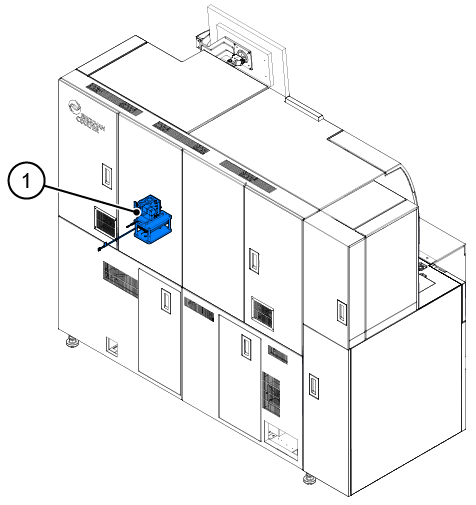
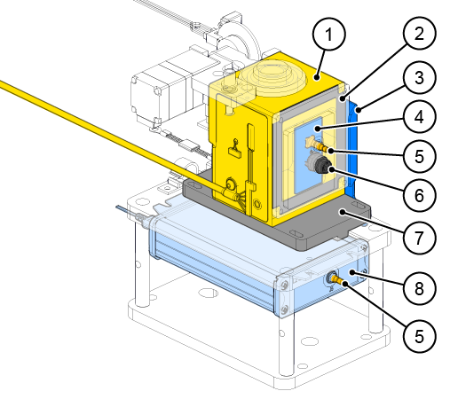
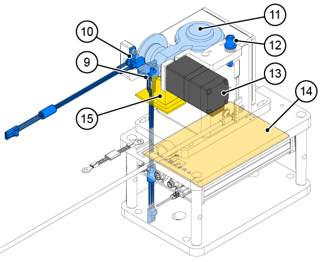
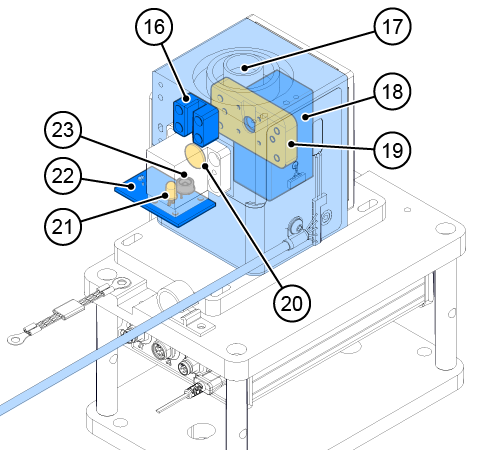
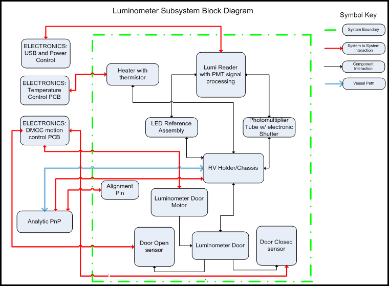

Operating Principles for the Luminometer (a.k.a. LumiBox)
This topic includes information about the theory of operation, or operating principles, for the luminometer module, also referred to as the LumiBox.
Function
The luminometer module accepts a reaction vessel, enclosing it in a dark state and "reads" the amount of light given off by the reaction within the vessel. This read value is interpreted by the system as relative light units (RLUs), which are used to calculate the concentration of certain analytes by using a calibration curve. The DxI 9000 Luminometer features an extended linear range in comparison to previous methods allowing for greater precision at higher signal levels. Details on this topic are summarized in the poster below from the AACC 2019 Trade Show:
Location
The Luminometer is located towards the right rear of the instrument, between the incubator wheel and wash wheel. See the top-down drawing of the instrument chassis and components below for a location reference:

Operational Overview
The luminometer module performs the following steps for each sample:
- Luminometer door opens
- Analytical pick and place places an RV (when completed with the "reaction build" process) in the luminometer
- Luminometer door closes
- Shutter covering the luminometer photomultiplier tube (PMT) opens
- PMT "reads" the light output of the sample within the RV and the system converts the value into Relative Light Units (RLU's)
- PMT shutter closes
- Luminometer door opens
- Analytical pick and place removes the RV and discards in a waste chute
Note: The luminometer also takes a "dark count read" once per sample run to "baseline" the RLU result for all following samples.
Major Differences from the DxI 800/600
- The Luminometer is an independent subsystem and not part of the wash wheel.
- Uses a PMT that has improved performance and an integrated electronic shutter. (Hamatasu #H12056-110)
- More consistent vessel placement in front of the PMT.
- Heated closure to maintain a consistent PMT temperature.
- Extended PMT linearity and range.
- Not susceptible to vessel to vessel crosstalk.
- Simple and easy to service or replace.
Component Locations and Functions

| 1 | Luminometer Chassis Heater Assembly |
| 2 | Gasket for Luminometer Cover |
| 3 | Magnetic Shield |
| 4 | PMT IF Board |
| 5 | PMT Signal Connection |
| 6 | PMT Control Connection |
| 7 | Top Slider Baseplate |
| 8 | Luminometer Reader Electronics and Enclosure |

| 9 | Luminometer Door Open Sensor |
| 10 | Luminometer Door Closed Sensor |
| 11 | Cap Assembly |
| 12 | Alignment Pin |
| 13 | Cap Motor |
| 14 | Luminometer Controller PCB |
| 15 | LED Reference Assembly |

| 16 | Luminometer Cap Guide |
| 17 | Sample (RV) Reader Chamber |
| 18 | Photomultiplier Tube (PMT) |
| 19 | PMT Mounting Block |
| 20 | LED Reference Filter |
| 21 | LED |
| 22 | DLED Reference Board PCB |
| 23 | Photodiode |
| Component | Description and Function |
|---|---|
| Alignment Pin | Alignment point for alignment of the analytical PnP to the luminometer module. |
| Cap Guide Block | Helps guide the lumi cap to the chassis ("interlocking concentric rings") |
| DLED Reference PCB | Provides a reference light source for the module (PMT) |
| dMCC Motion Control PCB | Controls the motion of the door motor and interprets signals from the open/closed sensors. |
| Door Closed Sensor | Detects when the PMT shutter is closed. |
| Door Open Sensor | Detects when the PMT shutter is closed. |
| EMI Gasket | Conductive gasket that aids in shielding Electro Magnetic Radiation and provides a seal for keeping light away from the PMT |
| Heater, Chassis | Maintains the temperature of the luminometer assembly. |
| LED | LED that provides a reference light source to the module (PMT). Kind of the same or redundant to the DLED Ref PCB....The LED is a component on the above board. |
| LED Reference | LED that provides a reference light source to the module (PMT). Kind of the same or redundant to the DLED Ref PCB....The LED is a component on the above board. |
| Lumi Reader PCB | Electronics / "control" for the module. |
| Luminometer Reader Electronics and Enclosure | Shielded enclosure to protect the module electronics |
| Magnetic Shield | Aids in helping with potential interference from the magnets on the Wash Wheel. |
| Mechanical Shutter (Door) | Opens and closes to allow RVs to enter and exit, allowing for samples to be "read" and removed from the module. The luminometer is multi-ringed to prevent light from coming in and has a normally closed position with about a 5% open pitch. It doesn't fully close during normal operation. |
| Motor, Door | Drives the open/close movement of the door. |
| Photodiode (LED) | Similar to the other comments on the LED, DLED PCB, etc. The photodiode is a "check"/feedback for the LED...allowing a reference light source for the module / PMT. Dana can add on this as well |
| Photomultiplier Tube (PMT) | Measures the light output of the samples. |
| PMT Control Connection and Cable | PMT signal and power connections. |
| PMT Mounting Block | Helps ensure proper location of the PMT to the RV. Mounting block for the PMT into the lumi chassis. |
| PMT PCB IF Board | |
| PMT Signal Connections and Cable | |
| Temperature Control PCB | Provides temp. control for the module. |
| Thermal Insulator / Sliding Block (Acetal Copolymer) | Isolates the module chassis (heated) from the lower portion of the module (unheated) |
| Vessel Containment Area | Area for the RV to be "read" by the PMT |
Component and Interaction Block Diagram

Interacting and Intersecting Devices
List of the other devices that this module interacts with.
- Analytical Pick and Place